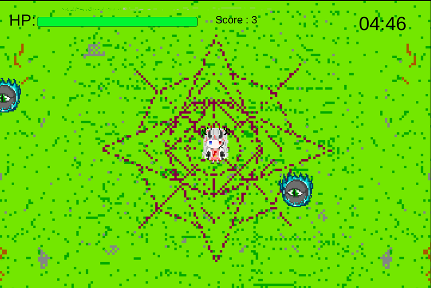
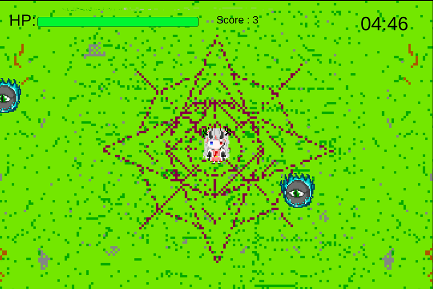
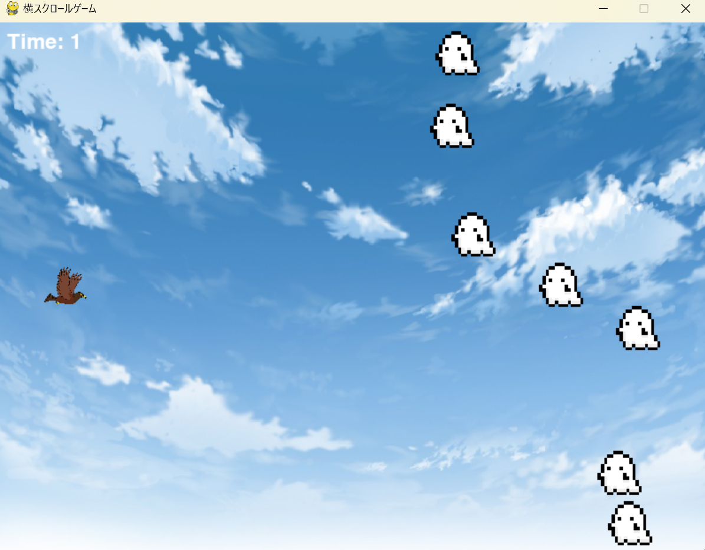
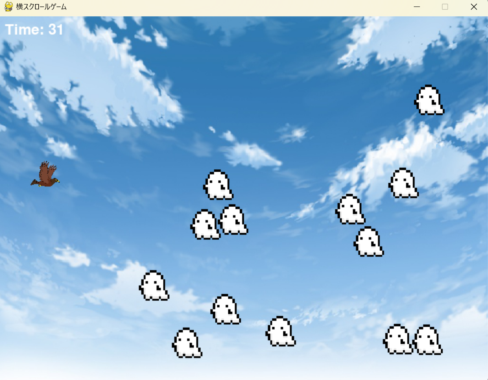
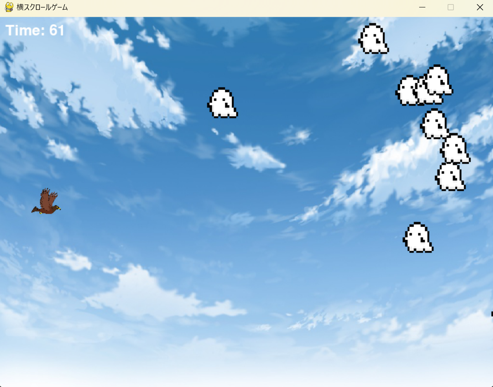
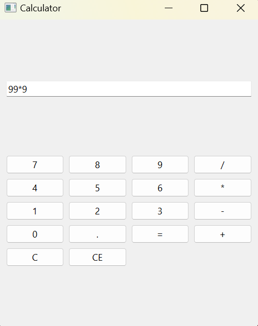
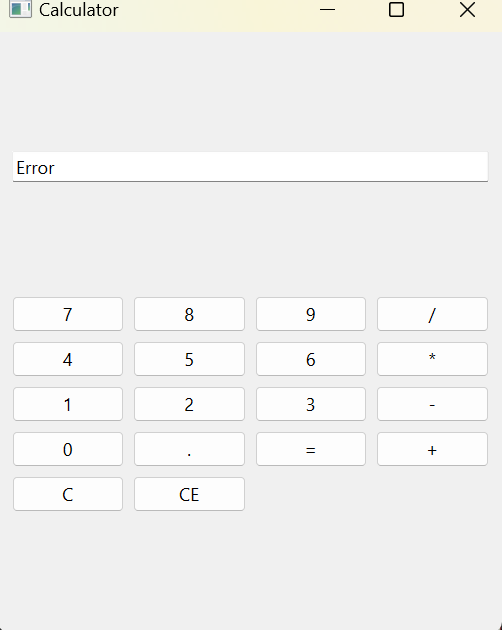
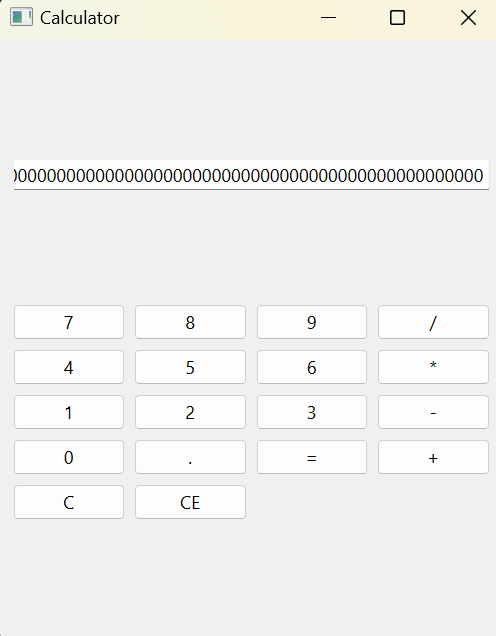
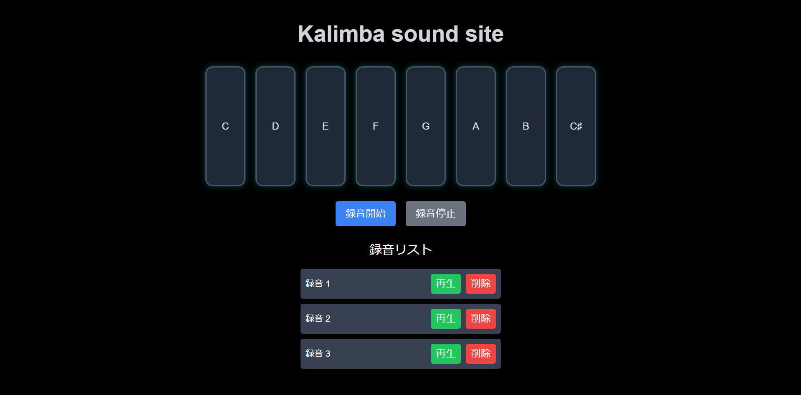
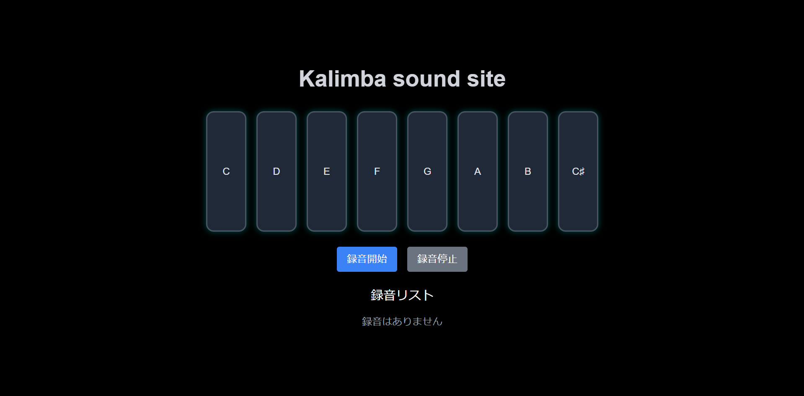

～すごろくゲーム～
リンクはこちら
・50マスの中でターン制ですごろくをします。約6時間で作成したゲーム。
一ノ瀬 直哉(いちのせ なおや)
・50マスの中でターン制ですごろくをします。約6時間で作成したゲーム。
殲滅サバイブ
リンクはこちらこのゲームで私は主に武器やエフェクトのデザインを担当した。
 

鷹を操作して迫りくる幽霊たちの猛攻をかいくぐって長い時間生き残るアクションゲームです。作成時間は2023年12月～2024年1月の間、約20時間。
操作は上と下キーで上下へ垂直に移動、この2パターンのみとなっています。もし幽霊に接触すると、鷹の位置と幽霊の数がリセットされます、30秒が経つごとに幽霊がスピードアップし、難易度が徐々に難しくなっていくでしょう。(スピードアップの回数は上限なし)。リセットされても速度は変わりません。
  作成期間2024年2月23日～24日、開発時間 約11時間。基本的な電卓です。1~9までの数字と＋、－、＊、割り算記号の代わりの／。そして＝の記号があります。小数点にも対応しています。記号や小数点のみなど、数字の答えがでないときはErrorを返すようにしています。
入力する数値ですが、おおよそ15桁以上は入力する事が出来ます。下の画像は、計算の例と上のパターンを再現したものです。あまりにも答えの数が大きい時は5.1846666148209e+27のように、Eを用いて表されます。
  作成期間2025年2月5日～2025年2月21日、開発時間 約28時間。カリンバの音をシミュレーションできるWebアプリです。画面上のボタンをクリックすることで音を鳴らすことができ、録音・再生機能も備えています。また、一定時間操作がない場合に自動演奏が開始される機能も実装しています。
機能 カリンバの演奏 画面上のボタンをクリックすると、対応する音(ド~高いドまでの音)が再生されます。 録音機能 「録音開始」ボタンを押すと、押した音とそのタイミングを記録します。 「録音停止」ボタンを押すと録音を保存します。 録音の再生・削除 保存した録音をリストから選択して再生できます。 必要ない録音は削除できます。 自動演奏機能 30秒間操作がない場合に、「喜びの歌」のメロディーが自動で演奏されます。
 